Selección Campeona del Mundo

Póster Oficial
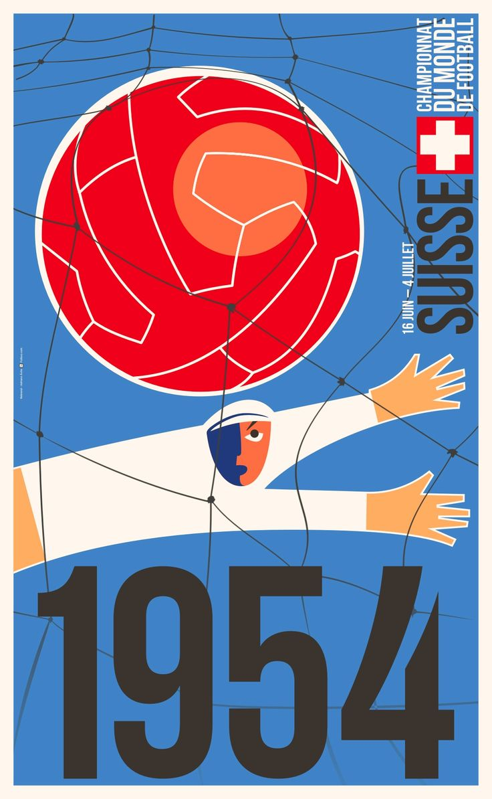
Trofeo del Mundial
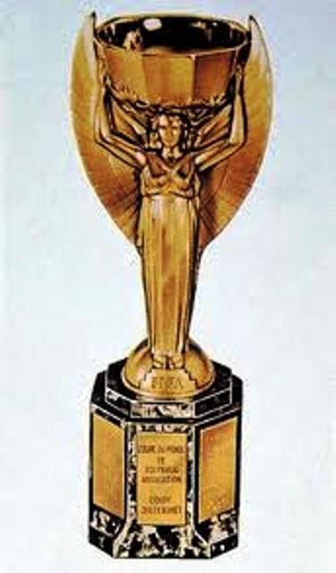
Álbum de Cromos

Balón Oficial
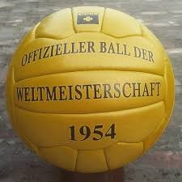
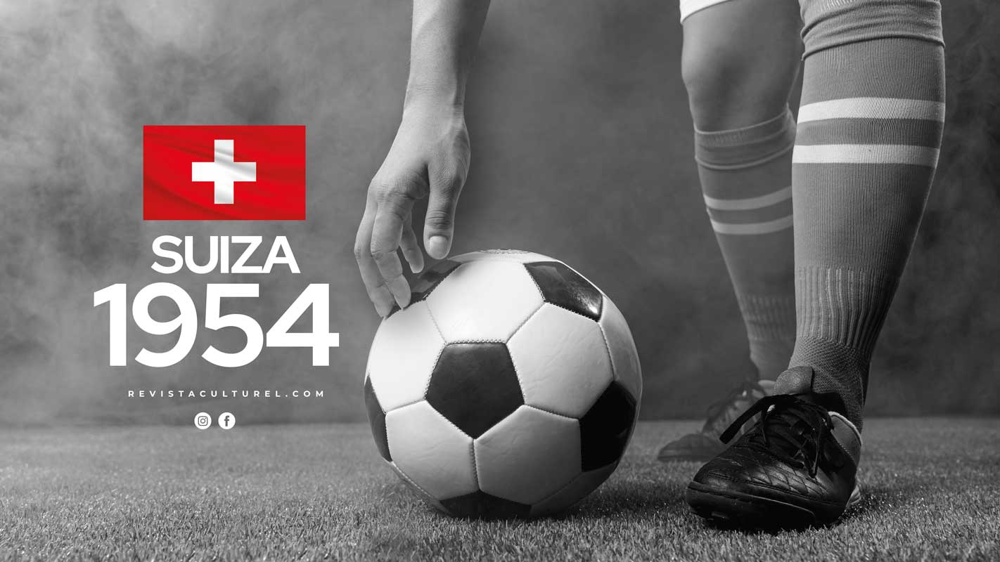
Selección Campeona del Mundo
Póster Oficial

Trofeo del Mundial

Álbum de Cromos
Balón Oficial

Participantes

Estadísticas del Mundial
Estadios Oficiales
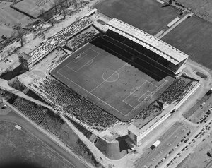
Wankdorf Stadium - Berna
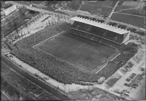
St. Jakob Stadium - Basilea
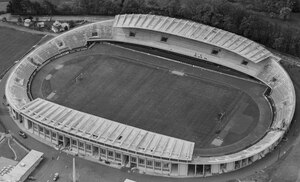
Pontaise - Lausanne
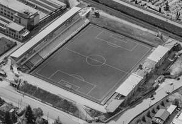
Charmilles - Ginebra
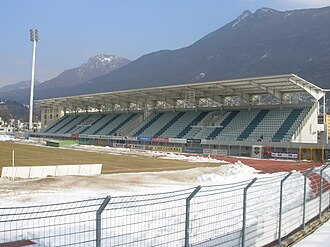
Cornaredo - Lugano
Semifinales
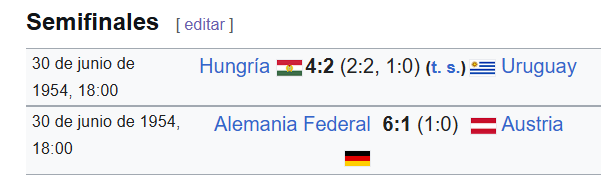
Gran Final
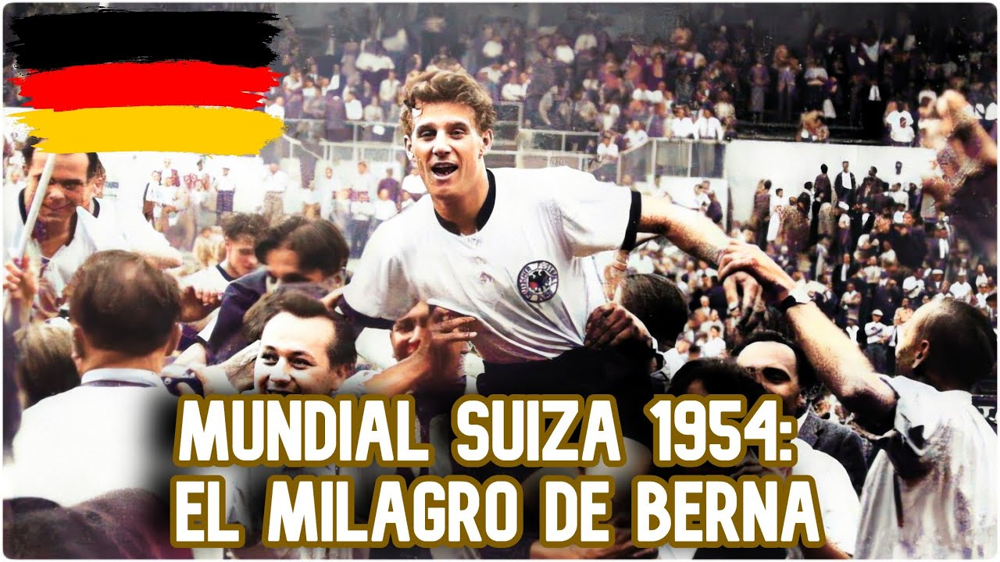
Tabla de Puntajes
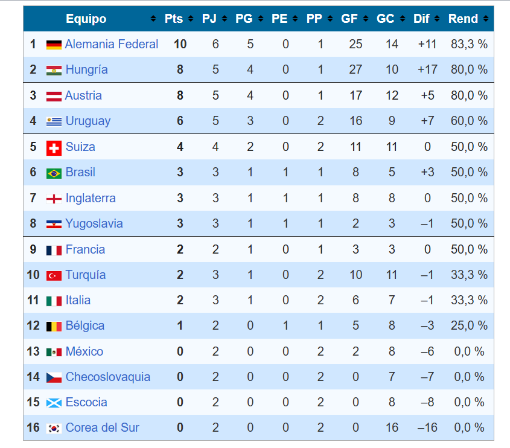
Goleadores del Mundial
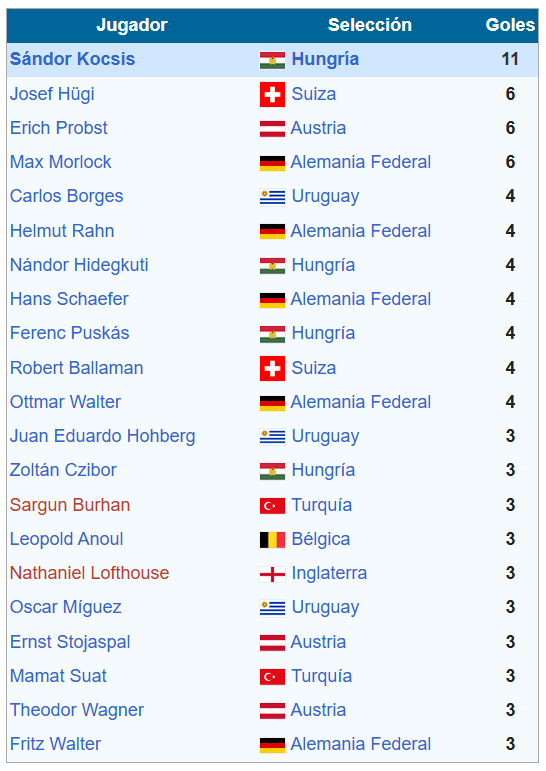